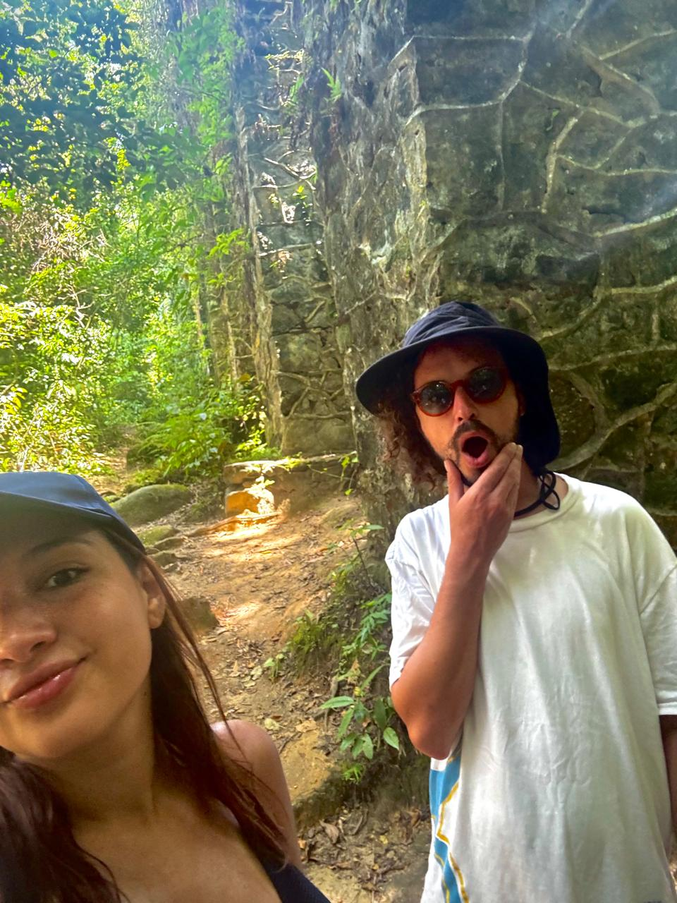

Relatos de viaje y rutas compartidas
Buscás rutas de viaje simples y reales? Acá vas a encontrar itinerarios día a día con consejos, tiempos de traslado y presupuesto. Viajamos por Brasil, la cordillera mendocina y el sur de Argentina, y estamos planificando Europa y Colombia. Este blog reúne relatos y aprendizajes para que armes tu próxima ruta sin complicarte.
Destinos destacados y rutas de viaje
Brasil

Ilha Grande, Brasil
Un paraíso entre la selva y el mar. Ideal para quienes buscan
naturaleza y poca gente.
Explorar destino
Colombia

Cartagena, Colombia
Colores, cultura y Caribe. Pronto sumamos relatos y consejos
para viajar.
Explorar destino
Europa
Europa soñada
Nuestra próxima gran aventura: recorrer Europa por 1 año y
medio. ¡Sumate al viaje!
Explorar destino